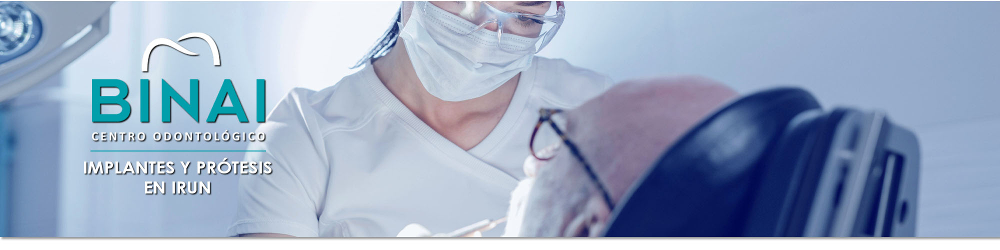
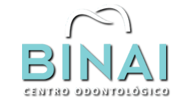

Centro Odontológico Binai en Irun
La clínica dental Binai cuenta con los últimos avances tecnológicos

Especialidades
En Clínica Dental Binai, nos consolidamos como una de las clínicas dentales de referencia en Irun.
Nuestra pasión por la odontología se refleja en el trato personalizado y cercano que brindamos a cada paciente, explicando detalladamente cada tratamiento y adaptándolo a sus necesidades específicas.
Implantología
En nuestra clínica dental en Irun reemplazomos los dientes enfermos o perdidos con implantes dentales de alta calidad, brindándote una sonrisa natural y funcional.

Ortodoncia
Corrección de la oclusión dental defectuosa mediante brackets metálicos, cerámicos o Invisalign, para lograr una sonrisa alineada y estética.

Estética dental
Mejora la apariencia de tu sonrisa con tratamientos como blanqueamiento dental, carillas dentales y diseño de sonrisa. En Clínica dental Binai apostamos porque la estética y la salud de tu boca vayan de la mano.

Laboratorio de prótesis dental
Elaboración de prótesis dentales personalizadas con tecnología CAD CAM para una máxima precisión y adaptación. Contamos con los mejores profesionales en diseño asistido por computadora para prótesis dentales.

P.A.D.I. Osakidetza
Atención a pacientes con cobertura PADI-Osakidetza, programa creado por el Departamento de Salud del Gobierno Vasco por el cual se garantiza la salud bucodental de la población infantil de Euskadi.
Programa dirigido a personas de 7 a 15 años de edad con derecho a la asistencia sanitaria pública en Euskadi.

Brackets o Invisalign
Por un lado, las técnicas fijas, como son los brackets metálicos o cerámicos de baja fricción permiten unos resultados óptimos en la corrección de la posición dental.
Por otro lado, tenemos los alineadores transparentes o Invisalign que no son fijos y permiten el movimiento de los dientes hacia la posición adecuada.

Centro de odontología general en Irun
En Clínica Dental Binai te atenderán profesionales odontólogos cualificados y con experiencia demostrada.
En nuestro centro tu salud bucal está en buenas manos, nos adaptamos a las necesidades de cada paciente.
Ven a visitarnos!
Tratamientos de estética dental en Clinica dental Binai
Implantes dentales en Irun - Clinica dental Binai

Clínica Dental en Irun
Profesionales odontólogos
TRATAMIENTOS DENTALES
• Implantes dentales
• Estética dental
• Ortodoncia
(Brackets - Invisalign)
• Laboratorio de prótesis dental
• P.A.D.I. Osakidetza
(Programa de Asistencia Dental Infantil)
CONTACTO
(junto al Ambulatorio de Elitxu)
20302 Irun (Gipuzkoa)
© CLINICA DENTAL BINAI S.L. - Todos los derechos reservados